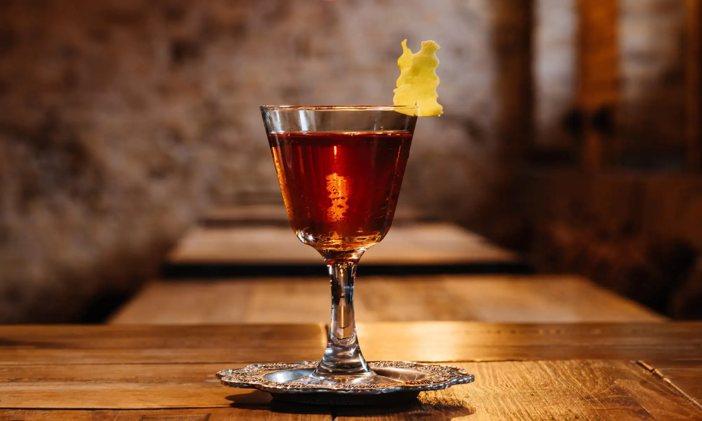

Originating from New Orleans, the timeless cocktail known as Sazerac is made with a combination of cognac or rye whiskey, bitters, absinthe, and sugar. Rye whiskey and absinthe can sometimes be replaced by bourbon whiskey and Herbsaint or Pernod.
Meal prep time : 5 minutes
Servings : 1